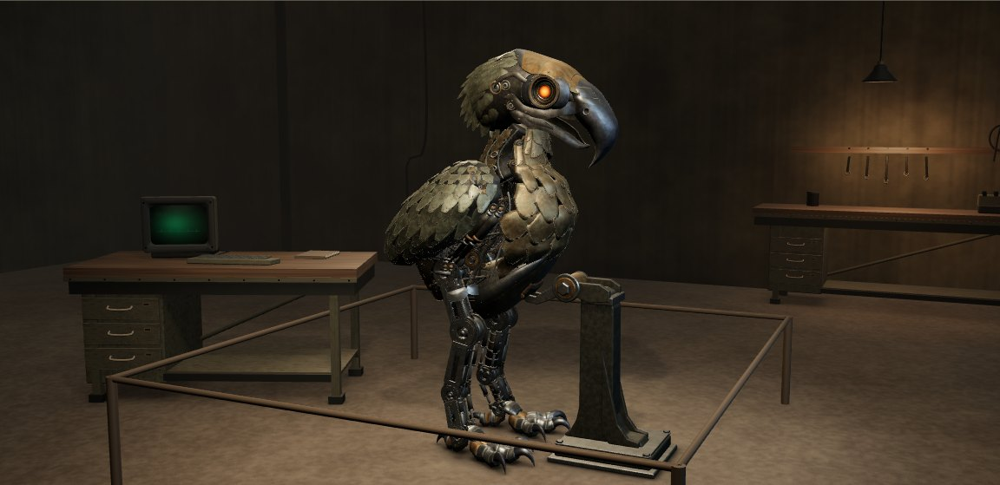

MurderBird: Uncaged
Three eras

15 MB to enter · 10 MB for full surfaces
Advanced · First Choice
The saddle gives. The feet hold. The bird shifts its weight and lowers its head toward the bolt before anyone asks.
Illustrated walkthrough and controls
Drag to orbit, scroll or pinch to zoom. Focus the view and use arrow keys to orbit, + or − to zoom, and Home to restore portrait. Scene time can be changed silently with the arrow keys. Return to rest closes the shell and resets the encounter.
Iron Verdict · song and lyrics
Production version 3 pairs the sung theme with a separate, lossless mix for continuous playback.
0:00 / 2:27
Choose Play music to begin.
Lyrics
First Choice · original silent pilot
In this eight-second illustrated motion study, the saddle yields, the torso shifts and the head lowers slightly. Both feet and the stand stay fixed. The clip was accepted for the story page.